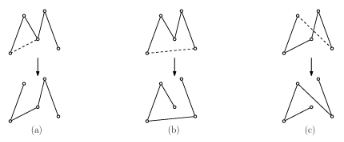
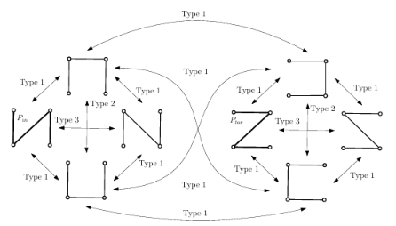
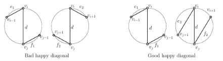
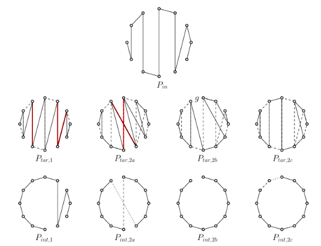

1. Problem Setting and Elementary Flips
In discrete geometry, reconfiguration problems study whether one geometric graph can be transformed into another through localized operations without violating structural properties such as planarity. In this project, we study the reconfiguration of plane spanning paths on point sets in convex position, based on the recent results by Aichholzer and Dorfer (EuroCG 2025).
Let $S = \{v_0, v_1, \dots, v_{n-1}\}$ be a set of $n$ points in the plane in strictly convex position, labeled in clockwise order around the boundary of their convex hull $\mathrm{Hull}(S)$.
A plane spanning path is a non-crossing straight-line path visiting all $n$ vertices of $S$ using $n-1$ edges, such that every vertex has degree at most $2$.
Edges connecting consecutive vertices on the cycle ($v_i$ and $v_{i+1 \pmod n}$) are called convex hull edges (or boundary edges). All other edges connecting non-consecutive vertices are internal chords, called diagonals.
Elementary Flips
A flip replaces an edge $e$ with a new edge $e'$ such that the resulting graph remains a valid plane spanning path. Following the characterization by Aichholzer et al. (WALCOM 2023), every valid flip falls into one of three geometric types:
- Type 1 Flip: Removes an edge $(p_{i-1}, p_i)$ and inserts a non-crossing edge between an endpoint and an internal vertex (either $(p_1, p_i)$ or $(p_{i-1}, p_n)$). This reverses the intermediate subpath.
- Type 2 Flip: Adds an edge $(p_1, p_n)$ between both endpoints to close the cycle, and then removes an arbitrary edge elsewhere along the cycle.
- Type 3 Flip: Adds an edge $(p_1, p_n)$ that crosses exactly one existing edge $(p_{i-1}, p_i)$, which is then removed in the same operation.

Given an initial path $P_{\mathrm{in}}$ and a target path $P_{\mathrm{tar}}$, the flip distance $\mathrm{dist}(P_{\mathrm{in}}, P_{\mathrm{tar}})$ is the minimum number of flips needed to transform $P_{\mathrm{in}}$ into $P_{\mathrm{tar}}$. This corresponds to computing a shortest path in the underlying flip graph whose vertices are all valid paths.
2. The Happy Edge Paradox (The 4-Vertex Trap)
In many graph reconfiguration problems, edges present in both the initial and target configurations are called happy edges. The intuitive happy edge property states that there should always exist an optimal reconfiguration sequence where shared edges are preserved and never removed. For triangulations and matchings, this property holds and allows greedy divide-and-conquer strategies.
A central discovery of Aichholzer and Dorfer is that the happy edge property fails for plane spanning paths.

The authors provide a counterexample on only $n = 4$ vertices in convex position, where exactly $8$ valid plane spanning paths exist in total:
- $P_{\mathrm{in}} = (v_1, v_0, v_2, v_3)$, containing edges $(v_1, v_0)$, $(v_0, v_2)$, and $(v_2, v_3)$.
- $P_{\mathrm{tar}} = (v_0, v_2, v_1, v_3)$, containing edges $(v_0, v_2)$, $(v_2, v_1)$, and $(v_1, v_3)$.
Both configurations share the internal diagonal $(v_0, v_2)$. However, as shown by inspecting the flip graph (Figure 2), $P_{\mathrm{in}}$ and $P_{\mathrm{tar}}$ cannot reach each other in a single flip, and none of the other six paths in the configuration space contains $(v_0, v_2)$. Consequently, every valid sequence of flips connecting $P_{\mathrm{in}}$ to $P_{\mathrm{tar}}$ must temporarily remove the shared diagonal and reintroduce it later. Greedy algorithms that attempt to preserve shared edges can thus lead to dead ends.
3. The Key Insight: Good vs. Bad Happy Diagonals
To find shortest flip sequences without exploring the exponential flip graph, the authors study how diagonals behave under flips. Boundary edges are flexible, but diagonals rigidly partition the point set.
A Type 1 flip either removes or adds a diagonal, but cannot do both simultaneously. If diagonals exist, we can always decrease the number of diagonals by adding a convex hull edge.
Any diagonal $d = (v_i, v_j)$ with $i < j$ splits the convex point set into two subsets of vertices: $$V_{\mathrm{left}} = \{v_{i+1}, \dots, v_{j-1}\} \quad \text{and} \quad V_{\mathrm{right}} = \{v_{j+1}, \dots, v_{n-1}\} \cup \{v_0, \dots, v_{i-1}\}$$
In a plane spanning path containing $d$, the edges adjacent to its endpoints are constrained to emanate into one of the two regions defined by $d$. Comparing these local orientations between $P_{\mathrm{in}}$ and $P_{\mathrm{tar}}$ determines whether a shared diagonal can be preserved:
Let $d = (v_i, v_j)$ be a happy diagonal shared by $P_{\mathrm{in}}$ and $P_{\mathrm{tar}}$:
- $d$ is a good happy diagonal if the two paths continue from its endpoints with the same local orientation (their adjacent edges emanate into the same cyclic subset of vertices).
- $d$ is a bad happy diagonal if the initial and target paths continue on opposite sides of $d$.

The authors prove that every bad happy diagonal must be removed in any valid flip sequence, whereas for any subpath of consecutive happy edges containing at least one good happy diagonal, there exists an optimal flip sequence that completely preserves all edges of that subpath.
4. The Four Cases and the Linear-Time Algorithm
Let $k$ and $l$ denote the number of diagonals in $P_{\mathrm{in}}$ and $P_{\mathrm{tar}}$, respectively. The flip distance between any two paths is governed by four structural cases:
- Case 1 (Good Happy Diagonals Exist): If $m \ge 1$ is the maximal number of good happy diagonals in a contiguous subpath of shared edges: $$\mathrm{dist}(P_{\mathrm{in}}, P_{\mathrm{tar}}) = k + l - 2m$$
- Case 2a (Type 3 Exchange): If $m = 0$, but one initial diagonal and one target diagonal can eventually be exchanged by a single Type 3 flip after removing the other $k-1$ diagonals: $$\mathrm{dist}(P_{\mathrm{in}}, P_{\mathrm{tar}}) = (k - 1) + 1 + (l - 1) = k + l - 1$$
- Case 2b (Common Boundary Gap): If no Type 3 flip is possible, but both paths share a common gap $g = (v_i, v_{i+1})$ on the boundary (an edge absent from both paths), all diagonals can be flipped to boundary edges matching at $g$: $$\mathrm{dist}(P_{\mathrm{in}}, P_{\mathrm{tar}}) = k + l$$
- Case 2c (Fallback): Otherwise, all diagonals must be removed, the boundary realigned via a Type 2 flip, and the new diagonals inserted: $$\mathrm{dist}(P_{\mathrm{in}}, P_{\mathrm{tar}}) = k + l + 1$$

The $\mathcal{O}(n)$ Algorithm without State-Space Search
The algorithm represents paths using two cyclic neighbor arrays $I[0 \dots n-1]$ and $T[0 \dots n-1]$, and a boolean boundary array $C[0 \dots n-1]$:
- Pass 1 (Case 1): Traverses $P_{\mathrm{in}}$ to count diagonals ($k, l$), identify shared edges in $\mathcal{O}(1)$ via $T$, and compute $m$ along contiguous runs of good happy diagonals.
- Pass 2 (Case 2a): If $m = 0$, checks for each initial diagonal $(v_i, v_j)$ in constant time whether a rotated counterpart $(v_{i-1}, v_{j+1})$ or $(v_{i+1}, v_{j-1})$ exists in $P_{\mathrm{tar}}$ with opposite local orientation.
- Pass 3 (Case 2b): If Case 2a fails, marks $C[i]$ for each boundary edge in $P_{\mathrm{in}}$ and $P_{\mathrm{tar}}$. A linear scan of $C$ finds any unmarked entry, which signals a common convex hull gap.
- Pass 4 (Case 2c): If no boundary gap exists, Case 2c applies directly.
Because each check executes in $\mathcal{O}(1)$ time per edge, the overall algorithm computes the exact flip distance and constructs the minimum sequence in $\mathcal{O}(n)$ time and $\mathcal{O}(n)$ space.